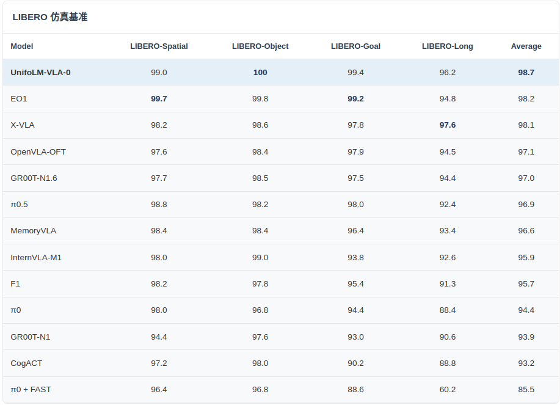

Method 方法
Model Overview 模型概览
Built upon the Qwen2.5-VL-7B model, we constructed a comprehensive multi-task dataset covering both robotic and general scenarios for continual pre-training. This multidimensional dataset encompasses 2D detection and segmentation, hierarchical task decomposition, 3D object detection, spatial reasoning, and trajectory prediction, improving the model's ability to align geometric space with semantic logic.
For manipulation tasks, we utilized the Open-X dataset to construct discrete actions. The model integrates action chunking prediction strategies with both forward and inverse dynamics action prediction. This endows the VLM with the capacity to comprehend physical interaction laws and perform long-horizon action planning.
基于 Qwen2.5-VL-7B 模型，我们构建了涵盖机器人与通用场景的多任务数据集进行继续预训练。该数据集包括了2D检测与分割、任务层级分解、3D目标检测、空间位置推理及轨迹预测等多维数据，提升模型对几何空间与语义逻辑的对齐能力。
针对操作任务，我们进一步清洗了 Open-X 和星海图开源数据集，最终用了340小时的机器人数据构建了离散动作，模型集成了动作分块预测策略、前向动力学及逆向动力学动作预测，从而赋予了 VLM 模型理解物理交互规律并进行长程动作规划的能力。
Spatial Reasoning Capabilities 空间推理能力
The following examples demonstrate the spatial reasoning and perception capabilities of UnifoLM-VLA-0 across different task types. 基于上述构建的数据集我们继续预训练得到了 UnifoLM-VLM-0，以下示例展示了 UnifoLM-VLM-0 在不同任务类型上的空间推理和感知能力。


Benchmark Results 评测结果
To quantitatively evaluate the improvement in spatial perception, we evaluated the model across three spatial understanding benchmarks. The results indicate significant performance improvement. 为了量化评估模型空间感知能力的提升效果，我们在三个空间理解基准上对模型进行了评估，结果显示模型得到较大提升。
Spatial Understanding Benchmark 空间理解基准

We conducted experimental validation of multi-task training in both simulated and real-world environments. The results demonstrate the model's general capability to handle multiple tasks using a single model. In the LIBERO simulation environment, our multi-task model approaches state-of-the-art performance. 我们基于 UnifoLM-VLM-0 和动作头构建了 UnifoLM-VLA-0，在仿真环境与真机实验中进行了多任务训练的实验验证，结果表明该模型可以实现一个模型完成多个任务的通用能力，LIBERO 仿真环境，我们的多任务模型接近最好效果的模型。
LIBERO Simulation Benchmark LIBERO 仿真基准
